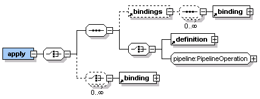

To apply a template, you provide bindings for all the required parameters and as many of the optional parameters as you want to change. The template:apply element causes a template to be applied.
There are two ways you can define the bindings.

The required name attribute on the template:binding element uniquely identifies a parameter in a set of bindings. You should use the optional value attribute to bind a fixed, simple or complex value to the parameter. For a dynamic value, you can specify a value using nested mark-up that is appropriate to the parameter type.
The ref attribute identifies another parameter value to use, and is only valid when a template:binding appears within the body of a containing template definition.
In the topic Defining templates we illustrated the use of two parameter names, 'title' and 'content' in a template definition. The following example shows how to bind that template to a page in the template:apply, with the template:binding elements passing the title and content parameter values.
<html xmlns="http://www.w3.org/2002/06/xhtml2"
xmlns:template="http://www.volantis.com/xmlns/marlin-template">
<head>
<title>Template elements</title>
</head>
<body>
<template:apply href="test.xdtpl">
<template:binding name="title" value="Welcome to Jive Intranet"/>
<template:binding name="content">
<template:complexValue>
<div>
<p>Jive Sports is seeking people to fill new job openings.</p>
</div>
</template:complexValue>
</template:binding>
</template:apply>
</body>
</html>
Related topics
About templates
Defining templates